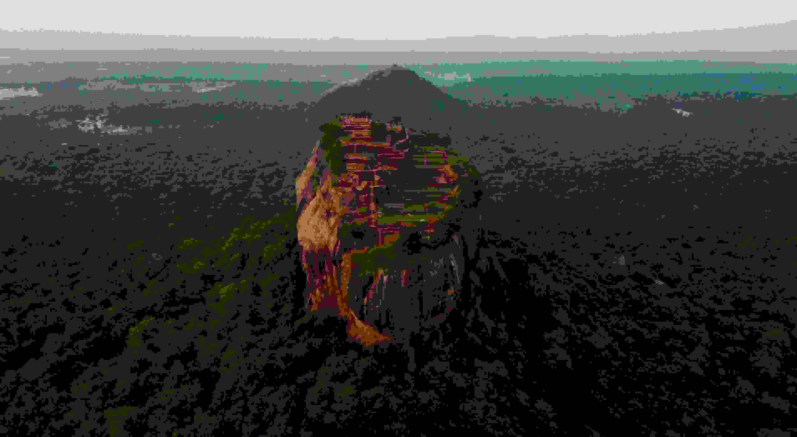

Tour invernale
Inverno Sri Lanka: Avventura e Cultura


Check In
Check Out
Adults
Children
7 Giorni |
Richiedi
Panoramica del giro
Questo viaggio in Sri Lanka di 15 giorni offre un’esperienza completa: storia a Negombo e Anuradhapura, avventura a Sigiriya, cultura a Kandy, natura a Ella, safari a Yala, avvistamento di balene a Mirissa, patrimonio a Galle, relax a Hikkaduwa e shopping a Colombo. Include anche trekking,visite a templi buddisti e mercati, e molto altro. Un viaggio di nozze in Asia indimenticabile che combina perfettamente avventura, cultura e relax. Con la nostra guida turistica, scoprirai la cultura e le tradizioni dello Sri Lanka, rendendo il tuo viaggio ancora più arricchente.

Giorni 1
Arrivo in Srilanka
Arrivo in Sri Lanka, pick up in aeroporto e trasferimento secondo l'orario di arrivo presso l'hotel più adatto a te a Negombo, che è il cuore dell'industria ittica dello Sri Lanka. La città è rinomata per la pesca ed il mercato del pesce di Negombo è probabilmente il migliore dell'isola. La città è dominata da santuari e chiese pittoresche per via della sua popolazione a maggioranza cattolica. Se siete interessati, visiteremo il mercato del pesce per sperimentare il sostentamento di una comunità di pescatori tradizionale nello Sri Lanka.
Pernottamento in un hotel vicino alla spiaggia di Negombo.


Giorni 2
trasferimento verso Anuradhapura
Dopo la prima colazione in hotel, trasferimento verso Anuradhapura. Visiteremo la prima capitale dello Sri Lanka, una delle antiche capitali, famosa per le sue rovine ben conservate dell'antica civiltà dello Sri Lanka. La città fa parte del patrimonio mondiale dell'Unesco.
Ritorno in hotel e pernottamento ad Anuradhapura.



Giorni 3
visitare al tempio e alle rovine
La mattina andremo a visitare il tempio e le rovine dell'ospedale antico di Mihintale, venerato come la culla del buddismo nello Sri Lanka. Seguirà il trasferimento verso Sigiriya, dove ci sarà il tempo per fare una passeggiata nel villaggio. Si potrà visitare una casa tradizionale, conoscere il loro stile di vita e le loro abitudini. Nel pomeriggio faremo un Safari nel parco Minneriya per vedere gli elefanti in libertà. Si potrà visitare un gran numero di raduni di elefanti. Pernottamento in Hotel a Sigiriya.


Giorni 4
fortezza di roccia di Sigiriya
Dopo la prima colazione in hotel, saliremo alla fortezza di roccia di Sigiriya, che è uno dei siti più affascinanti del patrimonio mondiale dell’umanità. Su questa sommità sorgeva il palazzo del Re Kasspa e da qui si domina la foresta circostante. Successivamente partiremo verso il sito archeologico di Polonnaruwa, seconda capitale del Regno medievale avanzato e prospero. Pranzo in una casa tradizionale. Se interessati, si potrà visitare un centro specializzato per il massaggio ayurvedico. Pernottamento in hotel a Sigiriya.


Giorni 5
verso Kandy
Dopo la prima colazione in hotel, partiremo verso Kandy. In mattinata visiteremo il Tempio d’Oro in Dambulla. Sosta a Matale per visitare il Giardino delle Spezie ed il tempio Indù. Dopo pranzo visiteremo Kandy, la capitale della collina, altro sito del Patrimonio dell’UNESCO. Per i buddisti dello Sri Lanka e del resto del Mondo è uno dei posti più sacri in quanto è la casa del "Dalada Maligawa". Visiteremo il Tempio del Sacro Dente Religioso del Buddha, ed in seguito vi porteremo a vedere delle danze tradizionali dello Sri Lanka. Pernottamento in hotel a Kandy.


Giorni 6
visitare il Giardino Botanico
Dopo la prima colazione in hotel, andremo a visitare il Giardino Botanico. Avrete poi del tempo libero a disposizione per girare tra le vie della città, per passeggiare sul lago superiore e fare shopping nella piazza del mercato. Visiteremo poi una fabbrica di Batik ed il museo delle Gemme. Successivamente, effettueremo un giro turistico della città di Kandy in Tuc Tuc.
Pernottamento in hotel a Kandy.


Giorni 7
partenza per nuwaraeliya
Dopo la prima colazione in hotel, partenza verso Nuwara Eliya. Lungo il tragitto ci fermeremo ad ammirare la cascata di ramboda, visiteremo una fabbrica di tè dove vi verrà mostrato tutto il processo di lavorazione delle foglie della pianta del tè ed infine faremo una passeggiata tra le piantagioni. Visiteremo poi la cittadina di Nuwara Eliya (circa 27500 abitanti) che é situata nell'entroterra dell'isola ed è il capoluogo dell'omonimo distretto. È nota come "Piccola Inghilterra" per via delle sue coltivazioni e del tempo umido. Spostamento verso Nanuoya dove viaggerete sul treno panoramico fino ad Ella,
In alternativa, secondo la tua preferenza potrai visitare l’Adams peak. Sri Pada è la montagna santa più venerata nello Sri Lanka. Essendo stata una montagna sacra, ogni anno milioni di locali e stranieri si recano in pellegrinaggio sulla vetta, nella stagione che va da Dicembre a Maggio. Ha un posto sacro nei cuori dello Sri Lanka a causa dell'importanza religiosa e della cultura, della storia che si è intrecciata con esso. Per molti, scalare la cima è un pellegrinaggio, per altri è un'avventura profonda.
Spostamento a Nanuoya dove viaggerete sul treno panoramico fino ad Ella.


Giorni 8
partenza per LIPTON SEAT
La mattina partenza per LIPTON SEAT. Punto panoramico, dove si effettuerà la visita alla piantagione del tè. Nel pomeriggio trekking al famoso ponte dei nove archi prima e successivamente trekking sul piccolo Adamo. In serata una lezione di cucina con una signora locale, dove potrete gustare una deliziosa cena tradizionale. Pernottamento in hotel ad Ella.


Giorni 9
visitare il ponte a nove archi
Al mattino trekking al famoso ponte dei nove archi. Successivamente partiremo verso Tissamaharamaya. Lungo il tragitto faremo una sosta alla cascata Rawana e la visita al Tempio di Buduruwagala. In serata visiteremo la città sacra di Kataragama, dove potremo partecipare alla cerimonia della pooja serale al tempio.
Pernottamento in hotel a Tissamaharamaya.


Giorni 10
safari in parco Nazionale di Yala
Di mattina presto faremo un safari nel parco Nazionale di Yala, per vedere leopardi e orsi. È inoltre possibile avvistare cervi maculati, sambar, cinghiali, bufali selvatici, coccodrilli, sciacalli, manguste e diverse specie di uccelli. Dopo il pranzo partiremo verso Mirissa.
in base alla tua scelta, puoi selezionare il tuo safari nel parco Yala o Udawalawe. Inoltre possiamo visitare la foresta pluviale di Sinharaja.
Sinharaja è una riserva forestale e un hotspot di biodiversità in Sri Lanka. È di importanza internazionale ed è stato designato Riserva della Biosfera e Patrimonio dell'Umanità dall'UNESCO.
Arrivo e sistemazione in hotel. Relax in spiaggia di Mirissa.

Giorni 11
Gita in barca a Mirissa
La mattina presto verso le 6.30 vi porteremo al porto di Mirissa per un gita in barca per l’avvistamento di balene e delfini. Il sud dello Sri Lanka è considerato uno dei migliori posti al mondo per avvistare balene blu, capodogli e delfini spinner.
Dopo il pranzo proseguiremo verso la fortezza di Galle. Il forte di Galle, o forte olandese, è una fortificazione inizialmente costruita dai portoghesi sulla costa sud-occidentale dello Sri Lanka. Tuttavia il forte subì ampie modifiche nel 17° secolo da parte degli olandesi, rendendolo uno dei più importanti monumenti archeologici, architettonici e storici per via della grande influenza europea che in esso si trova. Vedremo poi i pescatori sul palo e le tartarughe marine.
Arrivo e sistemazione in hotel alla spiaggia di Hikkaduwa.
3 giorni in spiaggia – Rilassarsi in spiaggia a Hikkaaduwa.


Giorni 15
rientro in Italia.
Dopo la prima colazione in hotel, partenza per Colombo la capitale commerciale dello Sri Lanka. Colombo ha una lunga storia come porto su antiche rotte commerciali est-ovest, governata successivamente da portoghesi, olandesi e britannici. Tale patrimonio si riflette nella sua architettura, mescolando edifici coloniali con grattacieli e centri commerciali.
Partenza per l’aeroporto per prendere il volo di rientro in Italia.
FINE DEL TOUR.


inclusi
- Caloroso benvenuto Caloroso benvenuto in aeroporto con una bellissima ghirlanda di orchidea.
- Trasferimenti Trasferimenti con la macchina privata con aria condizionata.
- Tasse Tasse governative e pedaggi stradali.
- alloggio Vitta alloggio per la guida.
non inclusi
- biglietti d'ingressi Tutti i biglietti d'ingressi per siti e templi, parchi nazionali, costo per jeep 4X4 safari , Boat safari Negombo, massaggio ayurvedico.
- Biglietti aerei

{kind=link}
{kind=link}